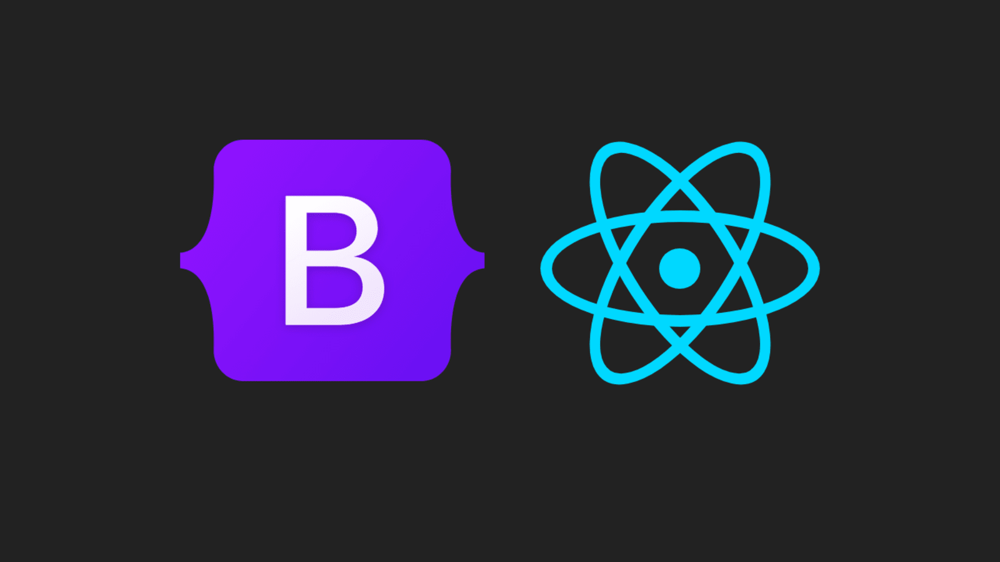

UI Frameworks, walking on the shoulders of giants.
05 Oct 2023
The Power of UI Frameworks: Beyond the Complexity
Introduction
User Interface (UI) frameworks are powerful tools in the world of web development, offering a structured approach to building visually appealing and responsive websites. However, they can seem daunting to beginners, akin to learning a new programming language. In this essay, we will delve into the reasons why developers should invest their time and effort in mastering UI frameworks like Bootstrap 5, exploring the benefits they offer and addressing the question of whether raw HTML and CSS are sufficient alternatives.
The Complexity Conundrum
UI frameworks are often perceived as complex and challenging to learn. Beginners may find themselves overwhelmed with the multitude of classes, components, and customization options. However, it’s important to remember that complexity often comes hand in hand with power. UI frameworks are designed to handle a wide range of scenarios and provide comprehensive solutions to common web development challenges.
Benefits of Using Bootstrap 5
1. Rapid Development
One of the primary advantages of Bootstrap 5 is its ability to accelerate the development process. It offers a wide array of pre-designed components, such as navigation bars, forms, and modals, that can be easily customized and integrated into web projects. This means less time spent on coding repetitive HTML and CSS and more time focusing on functionality and unique design aspects.

Figure 1: A web page built with Bootstrap 5 showcasing its responsive design.
2. Responsiveness
Bootstrap 5 is renowned for its mobile-first approach, ensuring that websites built with it are responsive from the start. This responsiveness is crucial in an era where users access websites on a variety of devices, from smartphones to large desktop monitors. UI frameworks like Bootstrap make it easier to create user interfaces that adapt gracefully to different screen sizes.
3. Consistency and Cross-Browser Compatibility
Ensuring a consistent look and behavior across different browsers can be a nightmare when using raw HTML and CSS. UI frameworks, on the other hand, are rigorously tested to work seamlessly on various browsers and devices. This reliability reduces the time spent on browser-specific bug fixes and compatibility issues.
The Role of Software Engineering
UI frameworks offer substantial software engineering benefits that extend beyond the surface level of design and development. They contribute to better maintainability, scalability, and collaboration within development teams.
1. Maintainability
UI frameworks encourage a structured and modular approach to code. Components can be reused throughout the project, making it easier to maintain and update the website over time. This modularity also enhances code readability, as developers can quickly identify and understand the purpose of each component.
2. Scalability
As a project grows in complexity, UI frameworks like Bootstrap provide a solid foundation for scalability. New features and pages can be added with relative ease, thanks to the framework’s consistent structure and pre-designed elements. This scalability is crucial for websites that need to evolve and adapt to changing user needs.
The Alternative: Raw HTML and CSS
While it’s possible to create functional websites using raw HTML and CSS, several challenges arise:
- Time-Consuming: Building a website from scratch with raw HTML and CSS can be time-consuming, especially for complex layouts and components.
- Inconsistent Design: Maintaining a consistent design across all pages can be tricky without a structured framework.
- Responsive Design: Achieving responsive design requires extensive CSS media queries and testing.
- Browser Compatibility: Ensuring cross-browser compatibility can be a constant battle.